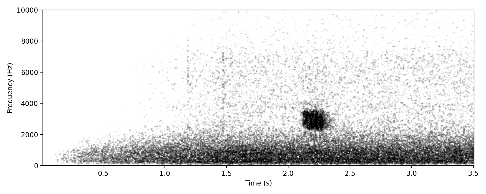
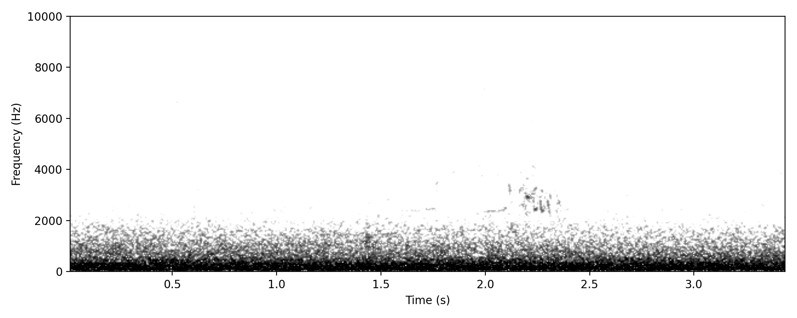
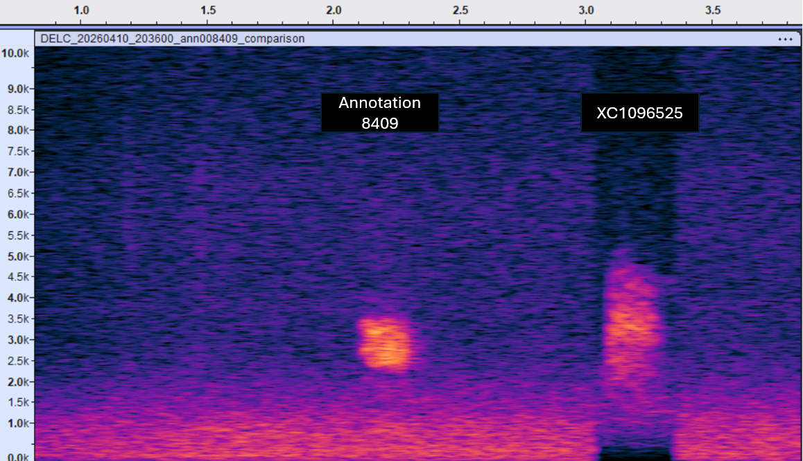

Zapornia pusilla
A short, broadband, rattling churr consisting of a rapid series of closely spaced pulses forming a continuous trill. Energy is concentrated between ~2.3–3.5 kHz, with even intensity across this range. The call appears as a compact horizontal band with fine vertical striations, indicating rapid amplitude modulation (pulse structure). Slightly stronger energy at the onset gives a subtly “swelling” or front-loaded quality. Duration is about 0.2s, with no clear harmonic stacking or frequency sweep, rendering the vocalisation more noise-like than tonal.
Presumed to represent nocturnal flight activity, based on the call structure and close similarity to reference material from Europe. Given that Baillon's Crake is a passage visitor and summer migrant in south-east Queensland, the call may be associated with migratory or dispersive movements, although local movements cannot be excluded. The extent to which this call reflects regular seasonal passage versus more sporadic or local activity remains to be determined from additional recordings.
Matches European Baillon’s Crake NFC structure closely (see comparison image); cannot fully exclude Spotless/Australian Crake at this stage due to lack of comparative recordings.
High confidence that this call represents a small crake-type nocturnal flight call, with Baillon’s Crake the most likely identification based on close structural agreement with European reference material; however, confidence is reduced slightly by the inability to fully exclude other small crakes due to lack of comparative recordings, and the lack of existing nocturnal flight call recordings of this species from Australia.
Other small crakes, particularly Spotless Crake and Australian Crake, whose nocturnal flight calls are poorly documented.
Project detections: 3 annotations; 2 nights; recorded in April; most recent detection 11 Apr 2026.


